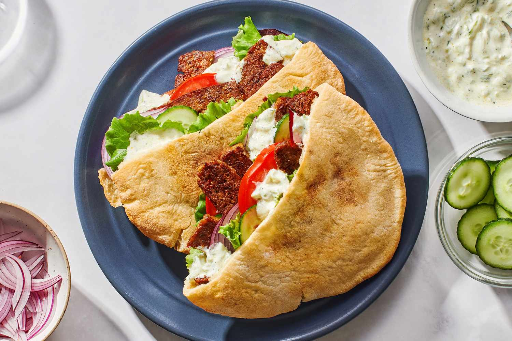

Home
Doner

Description
Doner kebab is a popular street food made with seasoned meat cooked on a vertical rotisserie and thinly sliced as it cooks. It is typically served in warm pita bread or flatbread with fresh vegetables, sauces, and sometimes fries. Known for its juicy meat, smoky flavor, and combination of savory spices, doner kebab is a satisfying and flavorful meal enjoyed around the world.
Ingredients
500g chicken thighs or beef
Steps
Slice the meat into thin strips and mix it with yogurt, olive oil, garlic, paprika, cumin, oregano, salt, and pepper. Let it marinate for at least 30 minutes.
Cook the meat in a hot pan until fully cooked and slightly crispy on the edges.
Warm the pita bread or flatbread and prepare the vegetables by slicing the tomato, cucumber, lettuce, and onion.
Fill the bread with the cooked meat, vegetables, and your favorite sauces, then wrap and serve warm.